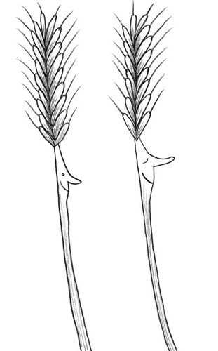

Ésta sí que es siega de vida,
ésta sí que es siega de flor.
Hoy, segadores de España,
Veníd a ver a la Moraña.
Trigo blanco y sin argaña
que de verlo es bendición.
Ésta sí que es siega de vida,
ésta sí que es siega de flor.
Labradores de Castilla,
veníd a ver a maravilla
trigo blanco y sin neguilla
que de verlo es bendición.
Ésta sí que es siega de vida,
ésta sí que es siega de flor.